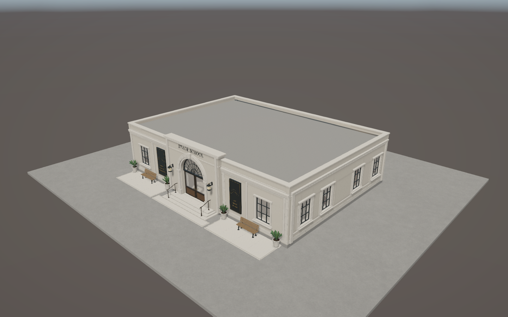
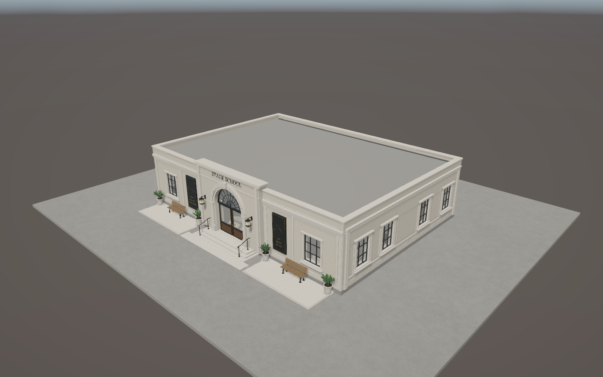
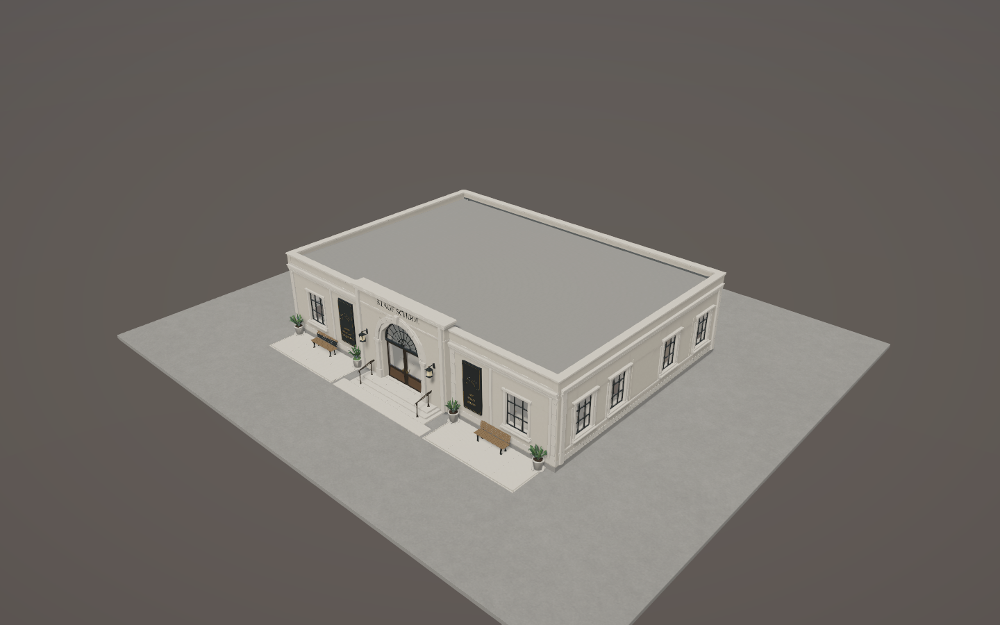
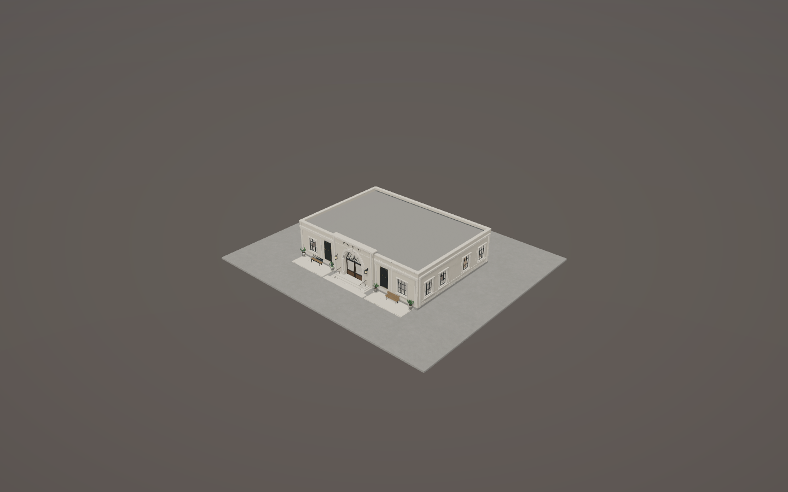
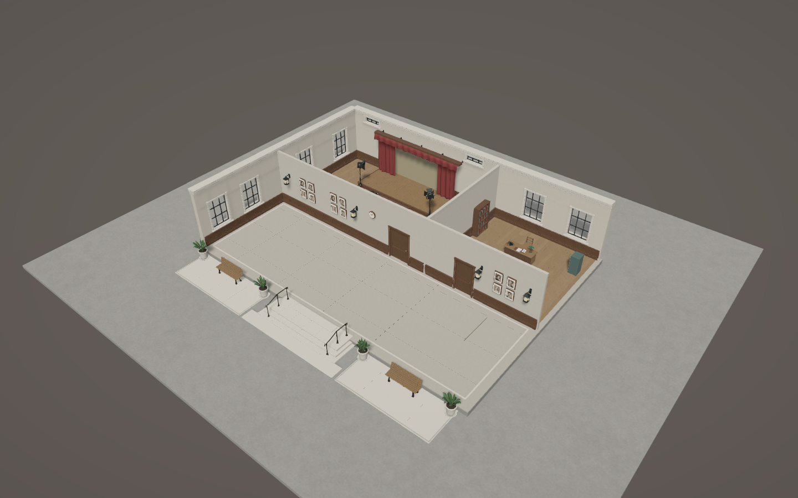
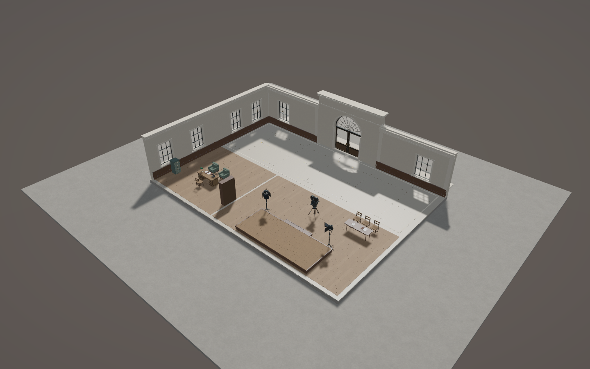
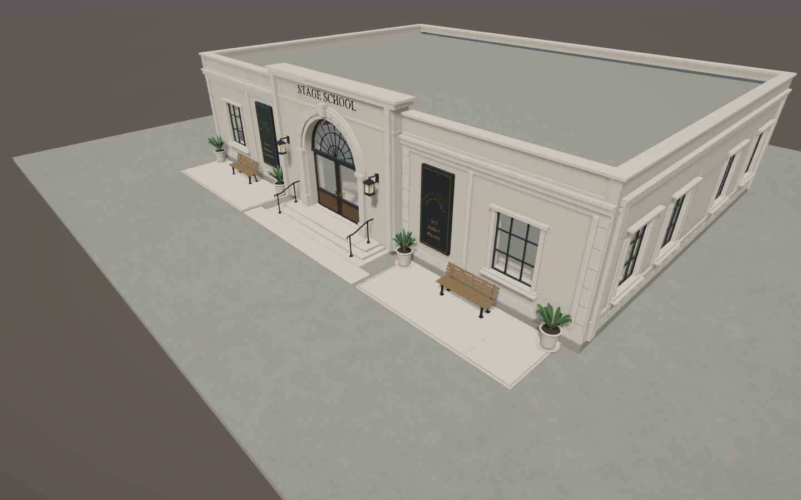
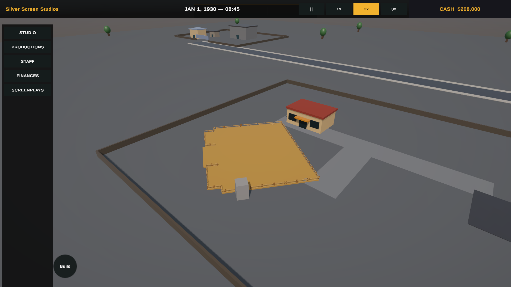
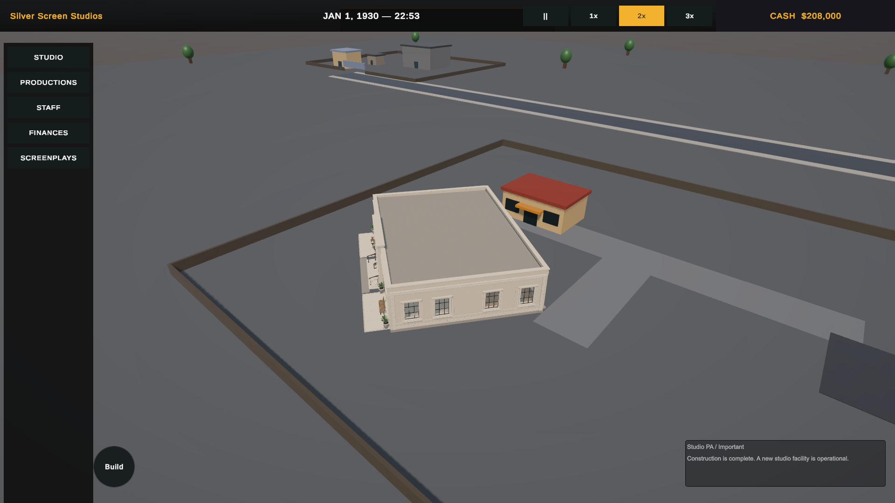

Frontage and navigation checks passed; pointer-input validation remains incomplete.25 Edit Mode tests passed. Construction and all navigation routes passed with background execution enabled; the broader run failed pointer-input checks. Editor completion has shown spikes (the latest background-enabled run reached 2,468 ms); smooth target-player completion is not certified.

Approved A4 master586,206 triangles. User-requested frontage revision.
Runtime LOD0466,700 triangles. Same camera as the master.
LOD1 · management151,934 triangles · 75 renderers.
LOD2 · distant111,322 triangles · 75 renderers.
Front-side revealCamera-relative walls and roof; attached fixtures follow their supports.
Opposite-side revealIndependent furniture remains; rear-supported curtains disappear with their wall.
Applicant forecourtSeparate waiting pockets and entrance landing; no frontage strip.
Actual placement · 37°Play Mode construction site and legal neighboring footprint.
Actual completed buildingReal construction completion; captured before the final paving-finish correction.